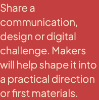
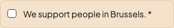
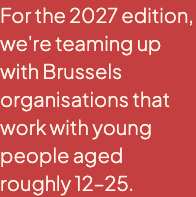
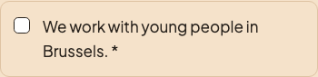
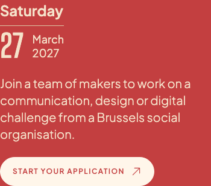
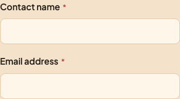
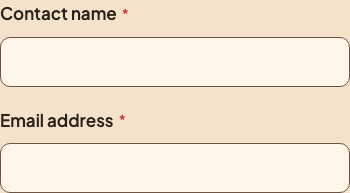

Je vijf gekozen wijzigingen zijn uitgevoerd.
Bekijk per onderdeel wat er op de site is veranderd. De oorspronkelijke tekstkleur blijft behouden volgens je laatste selectie.
Open de bijgewerkte websiteJongerenwerk in Brussel is nu een voorwaarde.
Je koos voor organisaties die werken met jongeren in Brussel. De intro noemt ongeveer 12 tot 25 jaar en het formulier vraagt één verplichte bevestiging.
Voor de wijziging
Intro op de organisatiepagina

Vraag in het formulier

Nu op de site
Intro op de organisatiepagina

Verplichte bevestiging in het formulier

De server weigert een aanvraag zonder de nieuwe bevestiging. Oudere aanvragen houden hun oorspronkelijke betekenis.
De website gebruikt het goedgekeurde deelbeeld voor 2027.
De preview van een gedeelde link verwijst nu naar het nieuwe bestand. Thema, datum en editie zijn aangepast.
Het actieve bestand is og-2027.png. De server levert exact dezelfde afbeelding als je hebt goedgekeurd.
De oorspronkelijke tekstkleur blijft behouden.
Je laatste selectie bevatte deze kleurwijziging niet. Datum, doelgroepintro's en editiecopy gebruiken daarom weer Paper Cream. De eerdere contrastbevinding blijft open.
Voor de wijziging

Nu op de site
De formuliervelden hebben duidelijkere grenzen.
De dunne veldranden gebruiken nu de bruine inktkleur uit de site. De labels en veldafmetingen blijven zoals getoond in het voorstel.
Voor de wijziging

Nu op de site

Tab blijft bij de zichtbare menubediening.
Met het mobiele menu open kun je de verborgen inhoud niet meer bedienen. Tab en Shift+Tab blijven in het menu. Escape sluit het menu en brengt je terug naar de menuknop.
Ook getest: een menulink volgen en overschakelen naar een desktopbreedte maken de achtergrond weer beschikbaar.
Schermlezers krijgen nu de volledige datum.
Het zichtbare datumontwerp blijft hetzelfde. De datum heeft nu ook tekst die voorleessoftware kan gebruiken.
Voor de wijziging
Geen leesbare datum.
Nu op de site
Saturday 27 March 2027.
Dit is de werkelijk gecontroleerde tekst in de toegankelijkheidsboom van de browser.
Wat moet er nog gebeuren vóór livegang?
Mailaflevering, persoonlijke beheerdersaccounts, opvolging van aanvragen, fototoestemming, back-ups en de bewaartermijnen moeten nog worden bevestigd.
De build slaagt en 111 van 115 PHP-tests slagen. De vier eerdere fouten verwachten oude teksten; die waren niet geselecteerd in deze werkronde.